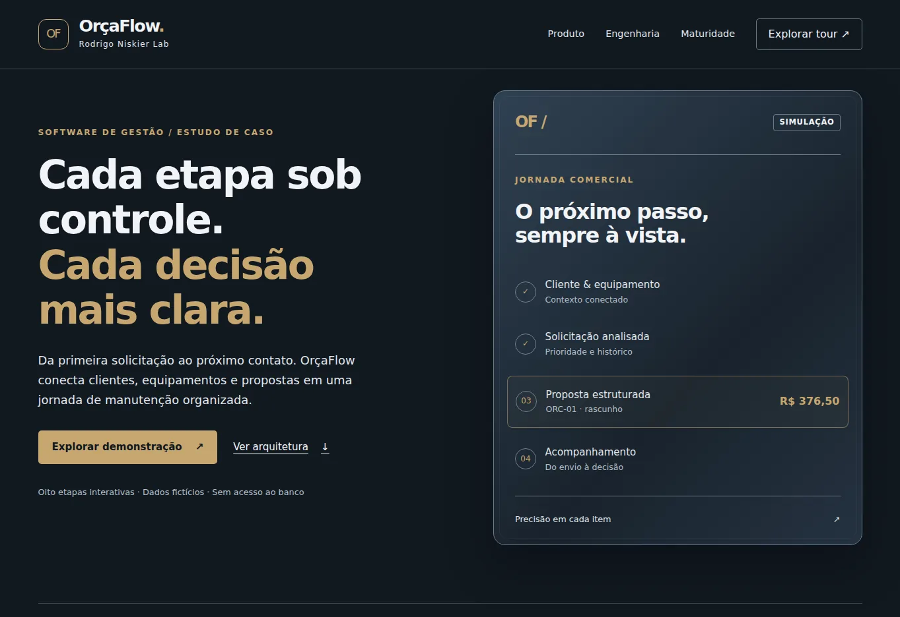
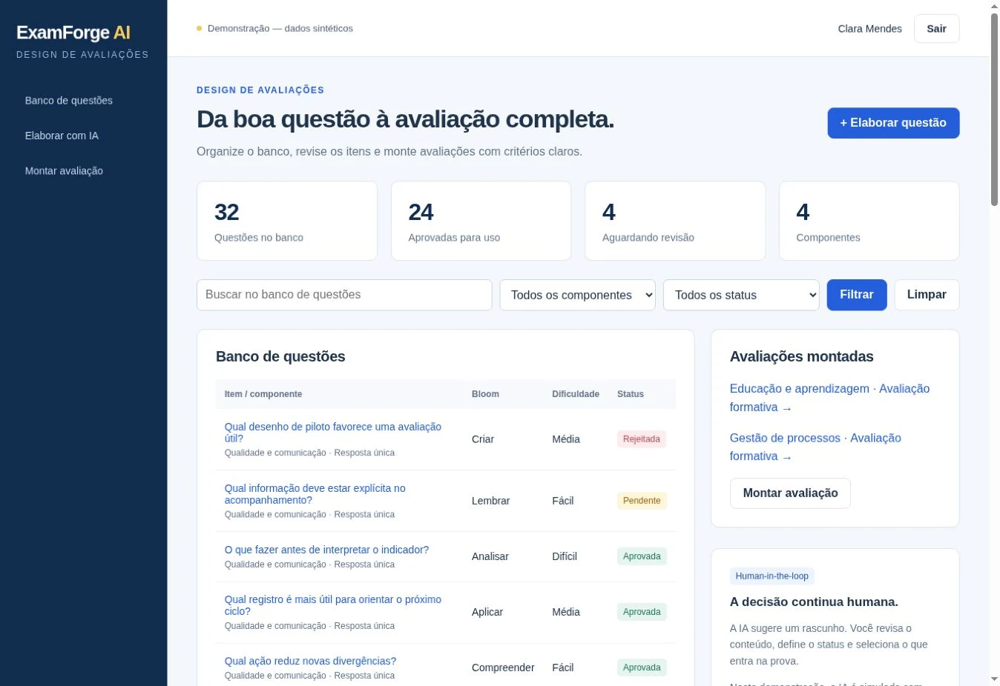
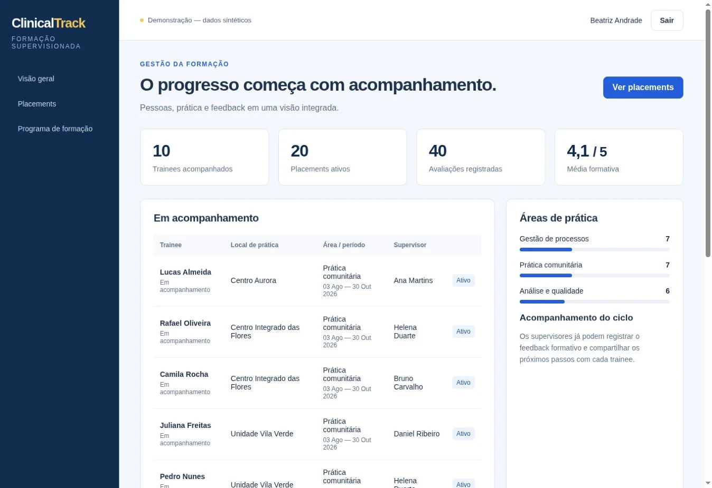
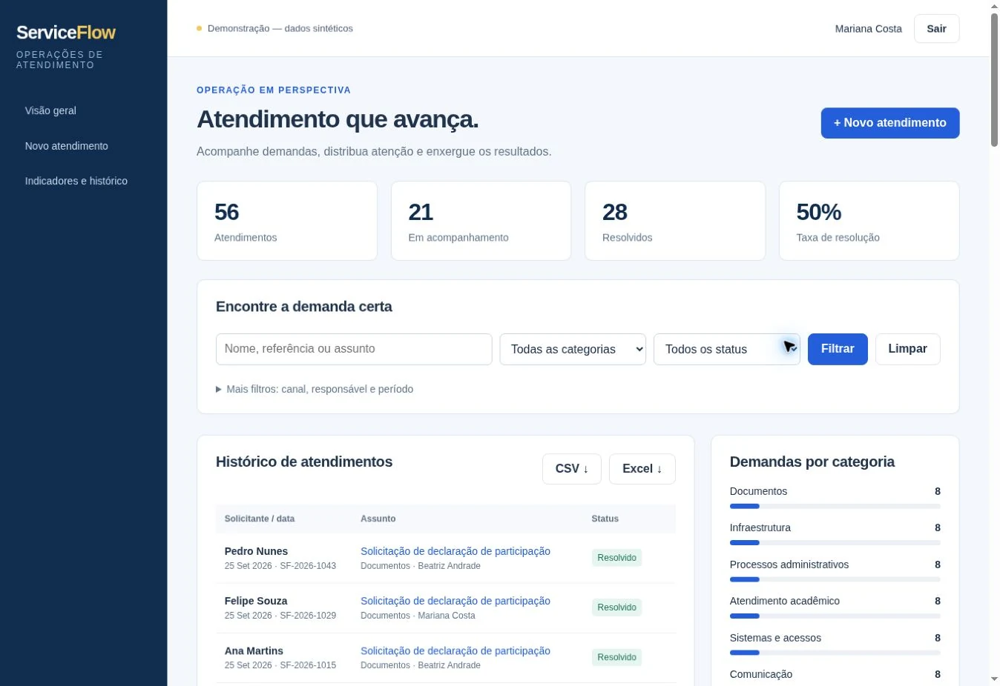
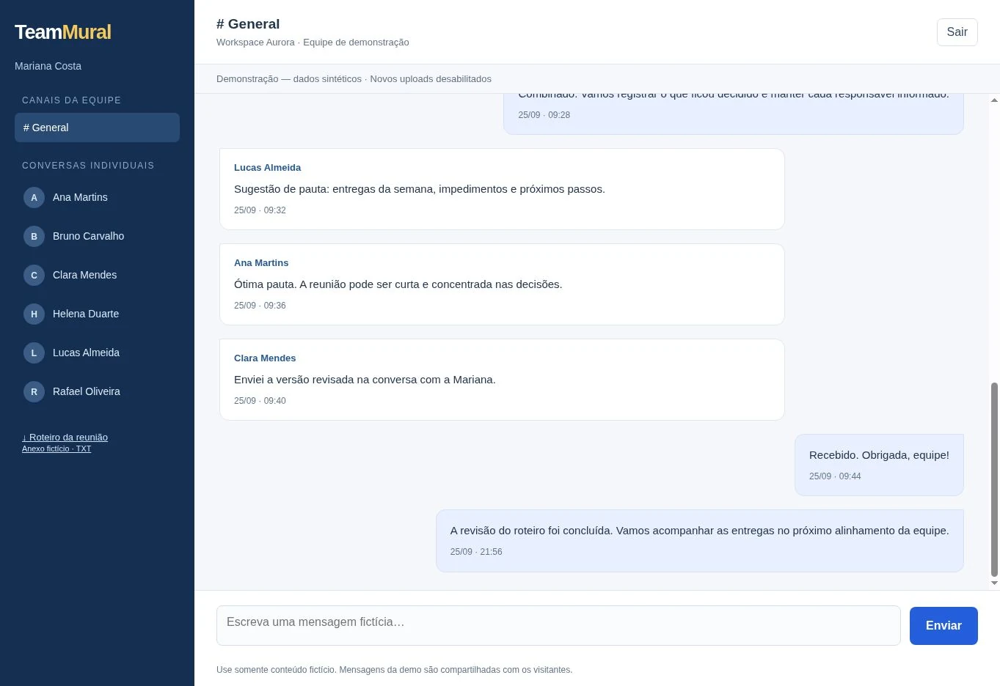

Aplicações web
Digitalização de processos, sistemas internos e produtos acessíveis pelo navegador.
Python Developer · Django · Flask · JavaScript · IA aplicada · EdTech · HealthTech · Automação
Desenvolvo aplicações web, automações e produtos com IA a partir de problemas reais de trabalho, educação e saúde — com foco em clareza, utilidade e entrega funcional.
Disponível para projetos remotos, freelance e contratos de desenvolvimento.
Clareza no processo.
Cuidado na experiência.
Foco em funcionar.
Digitalização de processos, sistemas internos e produtos acessíveis pelo navegador.
LLMs integrados a fluxos reais, com saída estruturada e revisão humana.
Avaliações, portais, simuladores, dashboards e ferramentas docentes.
Workflows educacionais e administrativos para cenários de saúde.
APIs, documentos, planilhas, dados e tarefas repetitivas.
Validação rápida de ideias com produto funcional e iterável.
Produtos com backend, banco de dados, interfaces responsivas, automação e integração com IA.
Escalas de Estágio – Medicina foi publicado como aplicativo Google Apps Script; a configuração inicial da senha administrativa ainda exige validação. O acesso e a planilha não são divulgados aqui para preservar dados pessoais. AulaPulse AI possui aplicação pública com integração Google Workspace validada em produção; a demonstração sintética é identificada separadamente. Nos demais projetos, as demonstrações usam dados fictícios. O RepoLens AI tem código e avaliação públicos, sem demo hospedada; no ExamForge AI, a geração e a revisão são simuladas.
Do preenchimento das escalas à visão da coordenação.
Sistema de organização de escalas de estágio de Medicina construído sobre Google Sheets e Google Apps Script. Uma planilha estruturada serve como base de dados para uma aplicação web de preenchimento, com oito escalas e painel da coordenação.
FLUXO DE ESCALAS E COORDENAÇÃO
Estado verificado em 19/10/2026: publicação realizada, oito escalas carregadas e bloqueio de envio vazio conferido. A definição da senha inicial e a validação completa da autenticação administrativa ainda estavam pendentes. A planilha e os dados pessoais não são publicados neste portfólio; o link da aplicação não é divulgado aqui.
Do feedback de uma aula à decisão pedagógica.
Aplicação full-stack que conecta avaliações anônimas no Google Forms à consolidação automática no Sheets e Apps Script, com indicadores por módulo e síntese pedagógica pela Gemini API. Uma integração real entre ferramentas Google e um dashboard público.
PIPELINE DE FEEDBACK ACADÊMICO
Verificação manual em produção: acesso em janela anônima, avaliação fictícia refletida nos indicadores e síntese pela Gemini API. Os 22 testes automatizados são verificações separadas. Projeto pessoal; repositório de código privado.
Pergunte ao código. Receba respostas com fontes.
Plataforma experimental que indexa repositórios de software e combina recuperação de trechos, ChromaDB e Gemini API para responder perguntas sobre o código com citações rastreáveis.
PIPELINE DE INTELIGÊNCIA DE REPOSITÓRIOS
Avaliação live inicial com Gemini 3.5 Flash-Lite e HashingEmbedder lexical (não embeddings semânticos). Métricas reproduzíveis, sem alegação de precisão semântica. Projeto pessoal com código público; não há demonstração hospedada.
Gestão de manutenção, do chamado ao próximo contato
Cliente → equipamento → solicitação → orçamento → acompanhamento. Um tour de oito etapas conecta seleção, serviços e materiais, transições de status, prazos e indicadores.
Dar continuidade a chamados e propostas dispersos, distinguindo atraso de elaboração e atraso de acompanhamento comercial.
A vitrine pública é uma simulação React/TypeScript com dados fictícios e estado temporário no navegador, sem conexão ao backend. O MVP Django/Python com PostgreSQL 17 permanece local e privado, sem implantação operacional.
Engenharia: Decimal/ROUND_HALF_UP por item, transações e integridade relacional no backend; cálculo inteiro exato no tour. Testes automatizados e GitHub Actions verificam regressões; a Vercel entrega o frontend estático. Propostas aprovadas não são receita.

Banco de questões e avaliações com apoio de IA
Da criação de itens à montagem da prova, com revisão humana, organização por competência e exportação para LMS.
Reduzir a fragmentação entre elaboração, revisão, aprovação e distribuição de avaliações.

Gestão de estágios, práticas e formação supervisionada
Trainees, supervisores, locais, períodos e avaliações em um fluxo único, com acesso definido pelo vínculo de supervisão.
Dar visibilidade ao percurso de formação e aproximar avaliação, acompanhamento e próximos passos.

Do atendimento operacional ao indicador gerencial
Registros dispersos se tornam solicitações organizadas, com categorias, responsáveis, filtros e indicadores para apoiar a gestão.
Transformar o histórico de atendimento em informação acessível para a operação e para a tomada de decisão.

Comunicação interna para pequenas equipes
Um espaço próprio para os alinhamentos da equipe, com canal geral, conversas individuais e histórico organizado.
Concentrar a comunicação de trabalho em um ambiente simples, com acesso por participação na conversa.

Desenvolvedor com foco em Python, aplicações web, automação e integração de IA. Tenho experiência em transformar processos complexos em ferramentas digitais utilizáveis, unindo desenvolvimento técnico a uma trajetória acadêmica em ensino superior, pesquisa e educação em saúde.
Projetos independentes com Python, Django, Flask, JavaScript, bancos relacionais, geração de documentos, IA aplicada, APIs e implantação em nuvem.
Experiência acadêmica em cursos da saúde, avaliação educacional, microbiologia, imunologia, genética, biologia molecular e desenho de soluções para educação médica.
Interfaces, conteúdo, IA e automação em diferentes contextos.
Portal educacional, arquitetura curricular e design de conteúdo.
React · TypeScript · ViteGeração estruturada de documentos em um fluxo de trabalho acadêmico.
Django · AI · DocumentsSimulação de casos, árvores de decisão e acompanhamento da aprendizagem.
Django · AI · AnalyticsApresentações em PDF com interação por voz, gestos e teclado.
React · PDF.js · MediaPipeAgenda, papéis de usuário e organização de rotinas ambulatoriais.
React · TypeScript · SupabaseWorkspace para pesquisar, organizar e preparar conteúdo com apoio de IA.
Flask · SQLAlchemy · AIMinha experiência em ensino superior, pesquisa, extensão e educação em saúde me ajuda a compreender processos complexos e transformar necessidades em produtos digitais úteis.
Trabalho com desenvolvimento web, inteligência artificial e automação, conectando o problema de quem usa à solução que faz sentido construir.